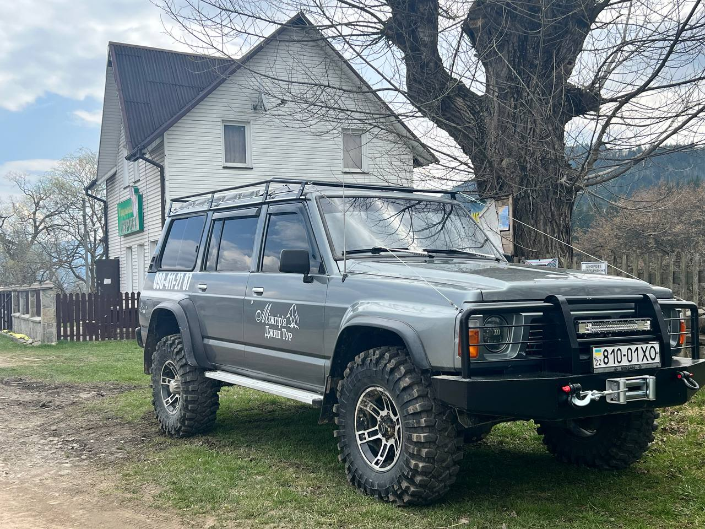
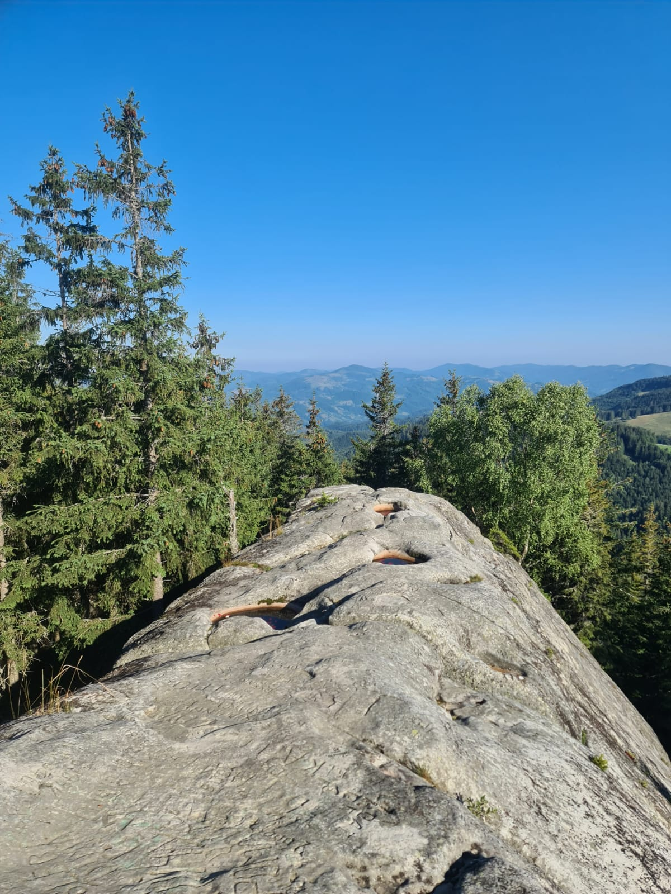
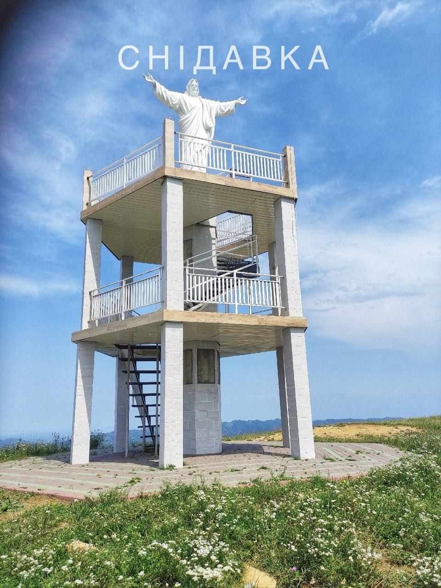
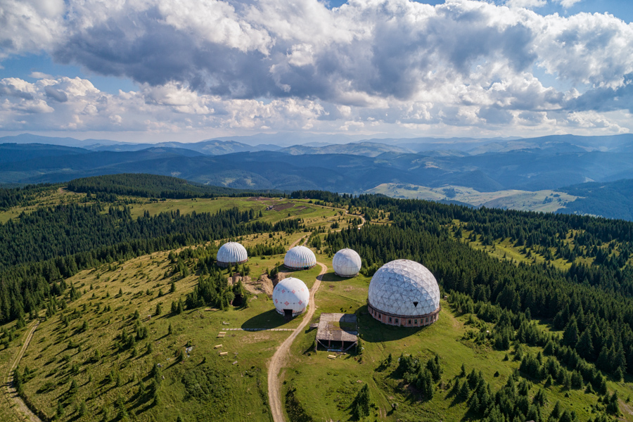
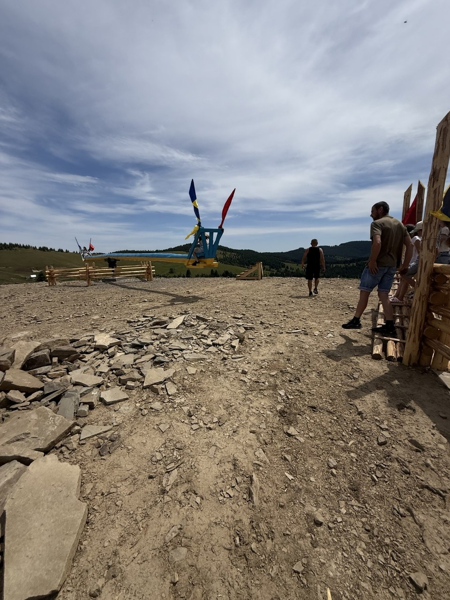
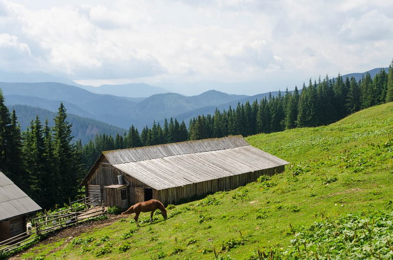
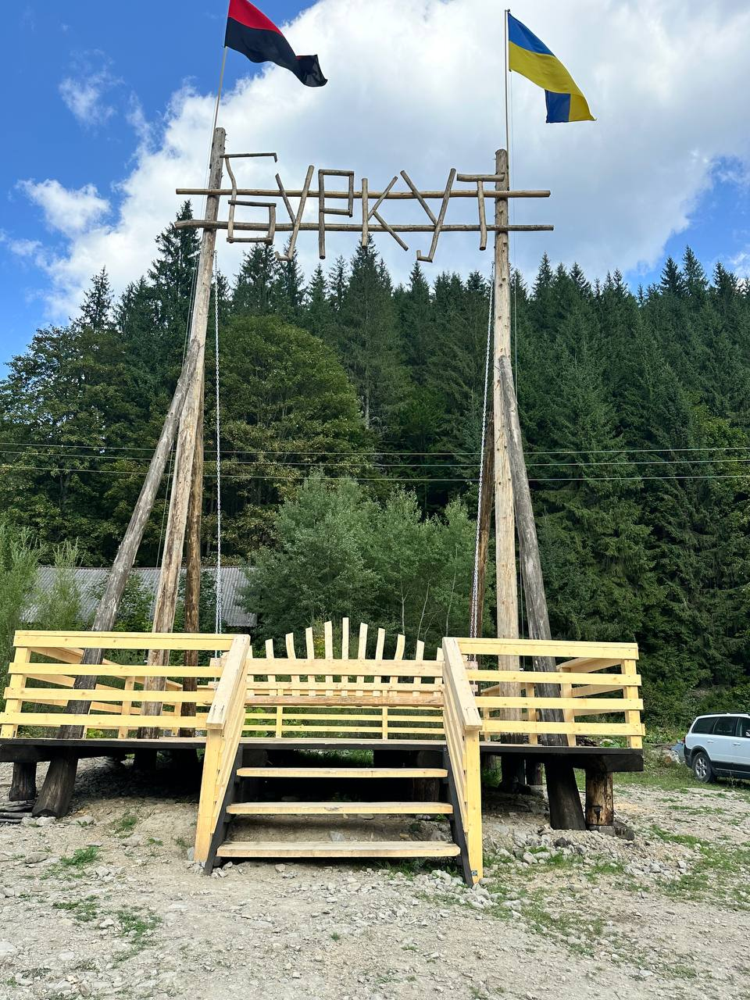
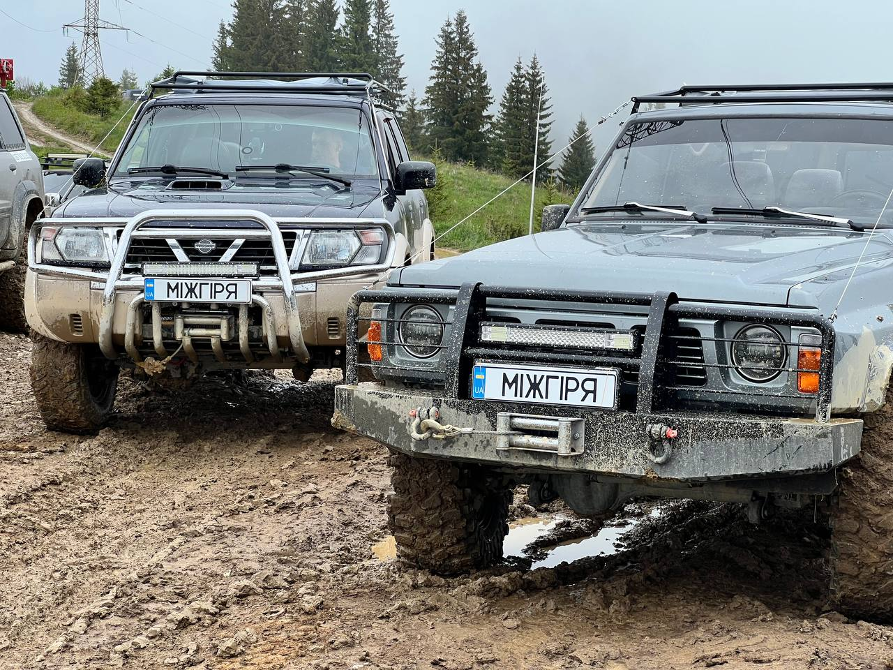
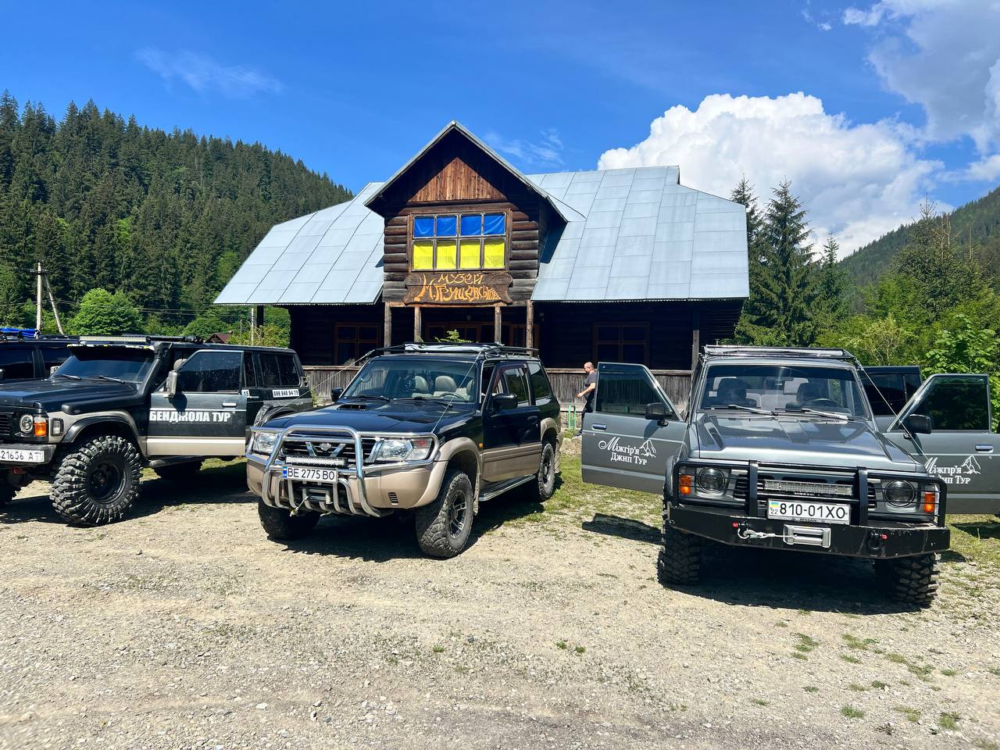
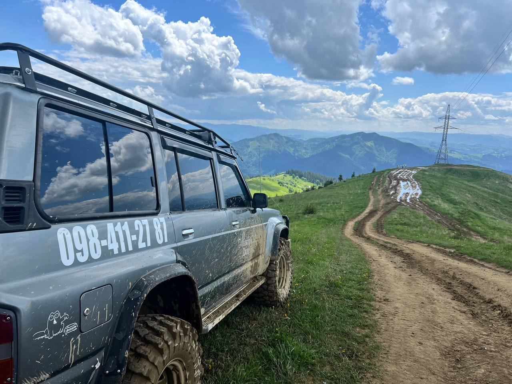

Гуцульські гори на повному приводі
Гори, полонини, оглядові майданчики, водоспади та наймальовничіші куточки Карпат. Везуть місцеві — родом з Верховини
- 8+Маршрутів
- 8 роківУ горах
- 4.9★Відгуків
Даруємо емоції, які залишаються в серці назавжди!
Ми — гуцульська команда з Верховини. Виросли серед цих гір, знаємо кожну стежку, кожне джерело й кожного ґазду на полонині. Наші джипи перевірені на складних гірських маршрутах Чорногори, а маршрути зібрані з історій, які передавали діди та місцеві мандрівники
Працюємо з групами різного формату — від камерних поїздок до великих виїздів і таборів до 60 людей. Головне — щоб ви відчули гори, а не просто побачили їх
- Місцеві гіди
- Підготовлені 4×4
- Бринза та чай
- Малі та великі групи
- Знижки для військових


Серце Гуцульщини — село Ільці
Серце Гуцульщини — село Ільці Наша база — у самому селі Ільці, на берегах Чорного Черемошу, в Івано-Франківській області. Звідси стартують усі маршрути в бік Чорногори, Гриняви та Мармароських Альп
- Адреса Село Ільці с. Ільці, 78700
- Час роботи Щодня з 09:00 до 22:00 Дзвінки приймаємо до 22:00
Як дістатись: Івано-Франківськ — 130 км · Чернівці — 150 км · Львів — 260 км.
Куди поїдемо?
Десять авторських маршрутів — від тихих полонин до високогірних хребтів. Прокладіть пальцем дорогу від однієї пригоди до іншої
Писаний Камінь
Місце сили та загадок. Скелі з давніми написами, неймовірні панорами та атмосфера, яку важко передати словами це треба відчути
- ₴ 4500 грн
- Легкий


Полонина Кринта
Один із найкрасивіших маршрутів із захопливими видами на гірські хребти. Ідеально для фото та перезавантаження
- ₴ 4500 грн
- Легкий
Гора Бенджола
Ідеальна локація для тих, хто хоче побачити Карпати з висоти. Простори, вітер і відчуття повної свободи
- ₴ 4500 грн
- Середній

Гора Біла Кобила
Відкритий трав'янистий хребет з 360° панорамою Чорногори та Гриняви. Вітер і простір
- ₴ 3500 грн
- Середній
Полонина Псарівка
Тут починається справжній дух гір тиша, зелені схили та традиційне пастуше життя
- ₴ 4500 грн
- Легкий


Снідавка
Особливе місце з панорамою на гори та символічною атмосферою спокою і сили.
- ₴ 7000 грн
- Легкий
Памір — гора Томнатик
Високогірний маршрут до легендарних радіолокаційних куполів на горі Томнатик. Дорога для тих, хто хоче справжньої гірської пригоди.
- Ціну уточнюйте
- Складний


Полонина Максимець
Складний маршрут на полонину для тих, хто любить дикіші дороги, відкриті простори, фотозони та гойдалки над карпатськими краєвидами.
- Ціну уточнюйте
- Складний
Полонина Кострича
Маршрут до мальовничої полонини з краєвидами на карпатські хребти, зеленими схилами та спокійною атмосферою гір.
- Ціну уточнюйте
- Легкий


Буркут
Атмосферний маршрут до відомої гірської локації Буркут із джерелами води, лісовими дорогами та зупинками для відпочинку серед природи.
- Ціну уточнюйте
- Легкий
Що ви побачите й скуштуєте
Кожна локація — це не лише фото, а й історія, смак і запах живих Карпат
-
Полонини й вівчарі
Відвідаєте мальовничі полонини, побачите життя карпатських вівчарів, колиби та неймовірні панорами гір
-
Панорамні вершини
Підніметеся позашляховиком на гірські вершини, звідки відкриваються захопливі краєвиди на Карпати
-
Гуцульські села
Познайомитеся з традиційним побутом гуцулів, старовинною архітектурою, місцевими ремеслами та гостинністю карпатських мешканців
-
Місцева кухня
Бринза, сир, бануш на сметані, гриби, форель з гірських потоків, узвар
Машини, що не підводять
Перевірені позашляховики з повним приводом, лебідками й шноркелями. Кожен виїзд — техогляд





-
Авторські маршрути
Стежки, яких немає в путівниках. Зібрані за роки життя в горах
-
Люди
Формати під будь-яку компанію — від малих груп до великих виїздів і таборів до 60 осіб. Гнучка організація під ваш запит
-
Підготовлені позашляховики
Nissan Patrol — кожен джип перевірений механіком
Карпати на власні очі


Готові у Карпати?
Напишіть або зателефонуйте нам — підкажемо найкращий маршрут під вашу компанію та погоду
- Телефон +380 98 411 27 87
-
Час роботи 09:00 - 22:00
- Instagram @mizhirya.tour.ua
- TikTok @mizhirya.tour.ua
- Facebook @mizhirya.tour.ua